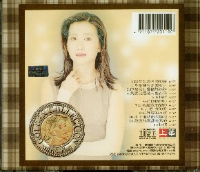

- １．（イ尓）看（イ尓）看月亮的（月僉） 4:37
- 冬季到台北来看雨 4:58
- （イ尓）究竟有幾個好妹妹 5:15
- 其實我還是有些在乎 3:52
- 木綿道 4:10
- 把他換作（イ尓） 4：44
- 日以継夜的想（イ尓） 4:30
- 去（口巴） 我的愛 4:08
- 白紗窗的女孩 4:48
- 不下雨就出太陽（口巴） 3:56
- 我説的（言荒）都是眞的 4:58
- 抉擇 4:18
このＣＤのジャケットは、顔の色が落ちていてちょっと恐いです。
| 前のＣＤ | タイトル一覧 | 次のＣＤ |
| １９９４年１２月２１日 | 鑽石金選集 （上） １９９０〜１９９４ | ＷＣＤ−２０８０ |
|---|---|---|
|
| 上華（WHAT'S MUSIC INTERNATIONAL INCORPORATED.） | |
| ||
|  | これは、ベスト集のパート１です。 このＣＤのジャケットは、顔の色が落ちていてちょっと恐いです。 | |